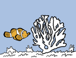
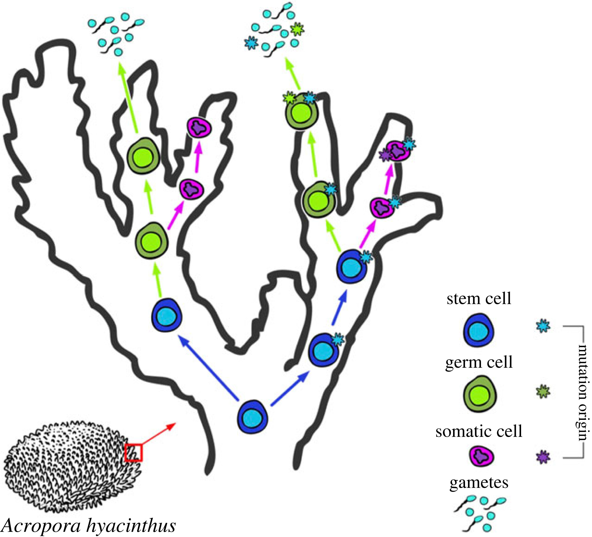

About
I am a Biology Ph.D. candidate in the Palumbi Lab at Stanford University. My interests lie in the evolution of resilience, from the molecular level up to ecosystems.

Coral Bleaching
Read our new paper on differences in bleaching resilience in two Acropora species here.
Genome Maintenance
Read our newest paper on somatic mutations and genome stability maintenance in corals here.
Ionizing Nuclear Radiation
I study the effects of nuclear testing on the genomes of wildlife.

Coral Germline
I am investigating the presence/absence of dedicated germlines in scleractinian corals.